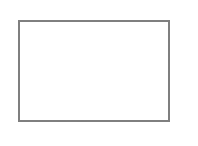
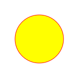

Canvas is an HTML element used to draw graphics using programming languages (usually JavaScript).
Allows you to place on the canvas:
lines, shapes, diagrams,
animations, images, text and more


The canvas element has a method called getContext(), used to obtain the rendering context and its drawing functions.
const canvas = document.getElementById('canvas');
const ctx = canvas.getContext('2d');
Draw Lines
Methods used
- beginPath() method
- moveTo(x,y) method
- lineTo(x, y) method
- stroke() method
ctx.beginPath();
ctx.moveTo(10, 45);
ctx.lineTo(180, 47);
ctx.stroke();

Draw rectangle
Methods used
- beginPath() method
- rect() method
- stroke() method
ctx.beginPath();
ctx.rect(20, 20, 150, 100);
ctx.stroke();

Draw a filled circle
Methods and properties used
- beginPath() method
- arc() method
- fillStyle
- strokeStyle
- fill() method
- stroke() method
ctx.beginPath();
ctx.arc(100, 75, 50, 0, 2 * Math.PI);
ctx.fillStyle = 'yellow';
ctx.strokeStyle = "red"
ctx.fill();
ctx.stroke();

Drawing text
The canvas rendering context provides two methods to render text: fillText() and strokeText()
ctx.font = "48px serif";
ctx.fillText("Hello world", 10, 50);
ctx.font = "48px serif";
ctx.strokeText("Hello world", 10, 50);
Using images
Methods used
- new Image()
- drawImage()
let newImage = new Image();
newImage.src = './assets/fog-1535201_1920.jpg'
newImage.onload = () => {
ctx.drawImage(newImage, 0, 0, 500, 300);
}
let canvas
let canvasContext
let increment = 0
let speed = 5
window.onload = function () {
canvas = document.getElementById('animationCanvas');
canvasContext = canvas.getContext('2d');
setInterval(drawEverything, 50);
}
function drawEverything() {
bounce()
increment = increment + speed;
canvasContext.fillStyle = 'black';
canvasContext.fillRect(0, 0, canvas.width, canvas.height);
canvasContext.fillStyle = 'blue';
canvasContext.fillRect(increment, 200, 10, 10);
canvasContext.fillStyle = 'green';
canvasContext.fillRect(200, increment, 10, 10);
canvasContext.fillStyle = 'red';
canvasContext.fillRect(increment, increment, 10, 10);
}
function bounce() {
if (increment < 0) {
speed = -speed
}
if (increment > 400) {
speed = -speed
}
}
Optimizing canvas
and use integers instead
for complex scenes
const ctx = canvas.getContext("2d", { alpha: false });
// Get the DPR and size of the canvas
const dpr = window.devicePixelRatio;
const rect = canvas.getBoundingClientRect();
// Set the "actual" size of the canvas
canvas.width = rect.width * dpr;
canvas.height = rect.height * dpr;
// Scale the context to ensure correct drawing operations
ctx.scale(dpr, dpr);
// Set the "drawn" size of the canvas
canvas.style.width = `${rect.width}px`;
canvas.style.height = `${rect.height}px`;